Visual Studio 2008 による GLUT プロジェクトの作成
プロジェクト を新規作成する
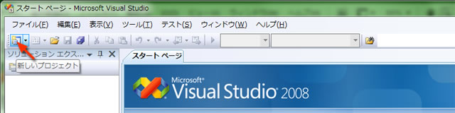
Win32 コンソール アプリケーション を作成する
- 「プロジェクトの種類」で「Win32」を選ぶ
- 「テンプレート」で「Win32 コンソール アプリケーション」を選ぶ
- 「プロジェクト名」を指定する
- 「ソリューションのディレクトリを作成」のチェックをはずす
- 「OK」をクリックする
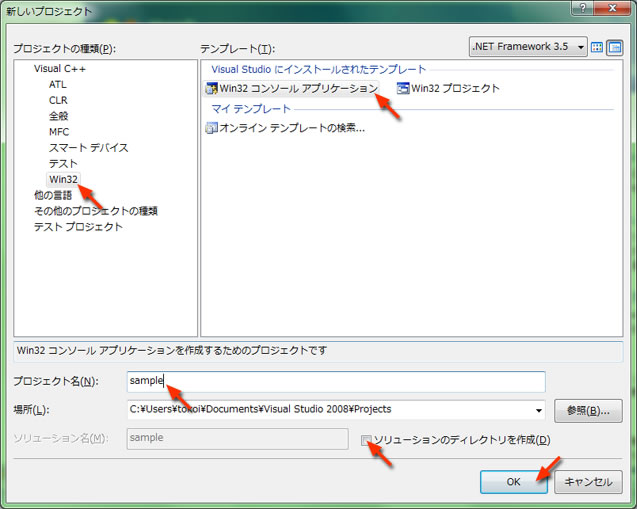
アプリケーションの設定
- 「アプリケーションの設定」か「次へ >」をクリックする
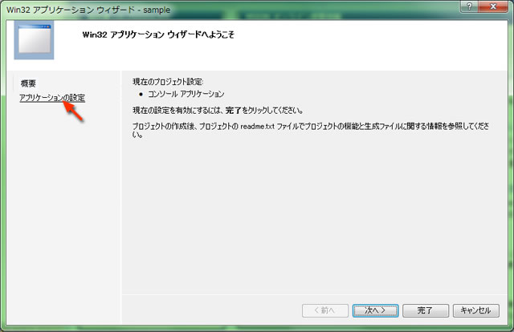
空のプロジェクト を作成する
- 「空のプロジェクト」にチェックを入れる
- 「完了」をクリックする
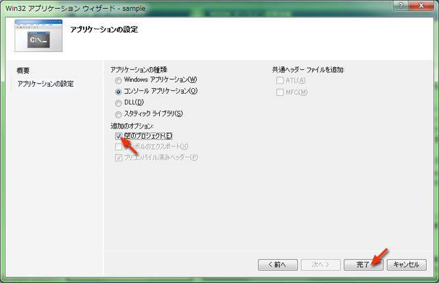
ソースファイル の作成
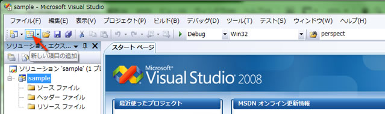
C または C++ ファイルを作成する
- 「カテゴリ」で「コード」を選ぶ
- 「テンプレート」で「C++ファイル」を選ぶ
- 「ファイル名」を指定する (C のソースファイルを作成するときは, "main.c" のように拡張子まで指定する)
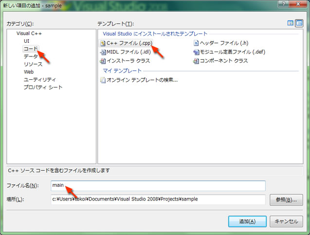
プログラムを書く
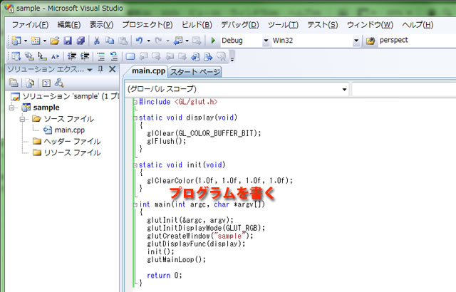
プログラムをビルドする
- 「ビルド」のメニューから「ソリューションのビルド」を選ぶ
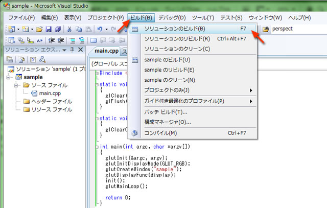
エラーを確認する
- 「出力」のウィンドウで "ビルド: 1 正常終了" となっていることを確認する
- エラーが起きていれば修正してもう一度ビルドする
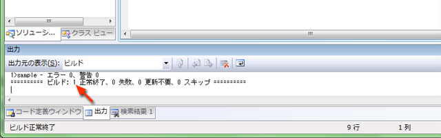
プログラムを実行する
- 「デバッグ」メニューから「デバッグ開始」を選ぶか, ツールバーの▶ボタンをクリックする
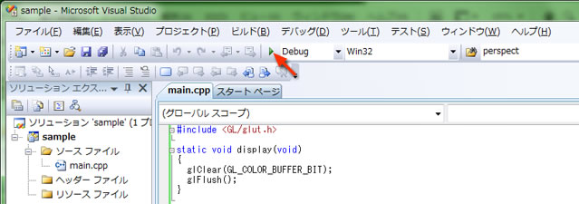
プログラムを終了する
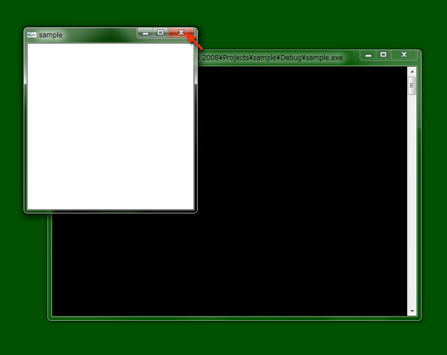